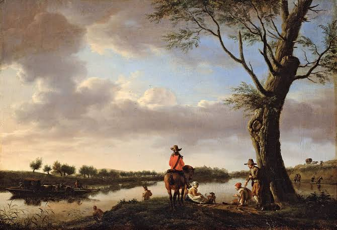

Art Gallery

HELLO I'M JAI!
Welcome to Artistic Visions Gallery, where creativity meets passion.
I explore various mediums to share emotions, stories, and visions.
Each piece reflects my journey of self-expression and imagination.
A surreal collection inspired by dreams and the subconscious mind.
I used charcoal and digital
techniques to blend reality with imagination, creating a sense of mystery and wonder in each artwork.
This project explores the play of light and using gold leaf and acrylics.
Each piece reflects
inner emotions , reminding viewers that even in the darkness, there is always a spark of brilliance.
A portrait series capturing raw human emotions.
From joy to sorrow, every stroke is a story of resiliance,
love and idenetity. This work aims tp connect deeply with viewers on personal level.